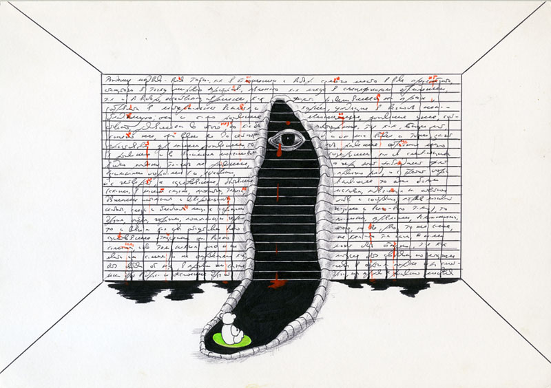
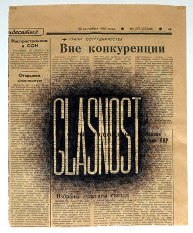
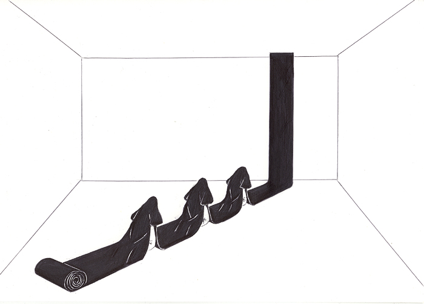
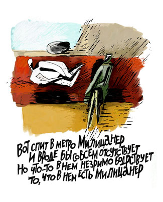
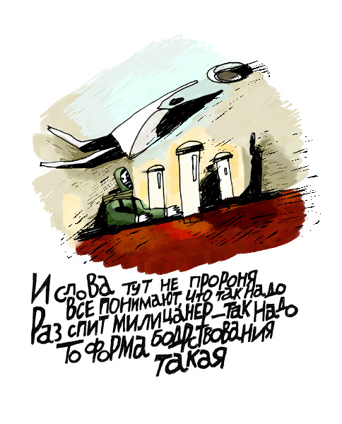
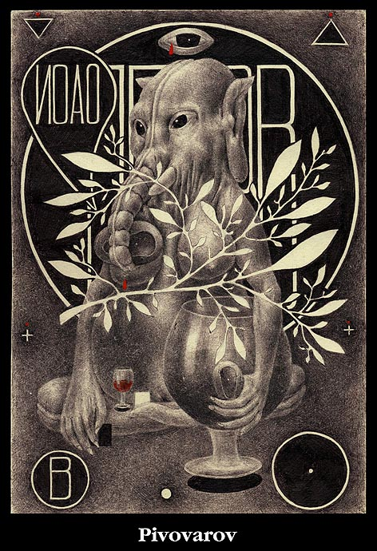

ГРАЖДАНЕ!
Умер Пригов.
Не думал я, что придется тут о нем написать, но писать о чем-либо другом сегодня, оказывается, никак невозможно. Иллюстрация здесь, конечно, ни при чем, но все-таки, Пригов выдающийся художник-концептуалист, так что мне такое отступление, думаю, простится.



Сказать особо нечего — пусть каждый сам решит, что сделал и кем был Пригов лично для него, но мы как-то не были бы нами, если бы не он.


Я могу только за себя. Пару лет назад я прожил месяц читая приговские стихи вдоль и поперек (иллюстрацию рисовал к ним), и то, что казалось мне веселым издевательством, оказалось прекраснейшими стихами, какие я вообще знаю. И еще, в юности я стопками рисовал несуществующих зверей на фоне непонятных символов, и только недавно узнал в них приговские «портреты».

Вдохновение нынче в большом дефиците. Снимем шляпы, граждане, очки и разуемся. Спасибо.